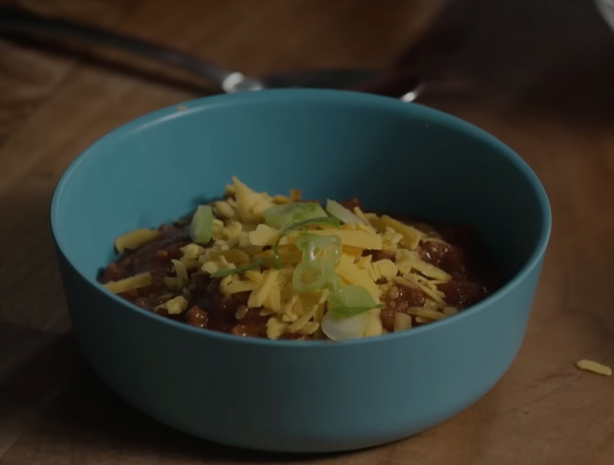

Kevin's Famous Chili

Ingredients
- 4 dried ancho chiles
- 2 Tbs neutral oil (vegetable, canola or grapeseed)
- 3 lbs ground beef (80/20 or 85/15 lean)
- 2 medium yellow onions, finely chopped
- 6 cloves garlic
- 1 large jalapeño, finely chopped
- 1 Tbs dried oregano
- 2 tsp ground cumin
- ¼ tsp cayenne pepper
- 2 Tbs tomato paste
- 2 12 oz. bottles of beer (lager or pale ale)
- 3 cans Pinto beans, drained and rinsed
- 3 cups beef stock
- 2 ½ cups chopped ripe tomatoes
- 2 Tbs kosher salt
- Chopped scallions, shredded Jack cheese and sour cream (for topping)
Instructions
- Combine beef and onion in a large saucepan over medium heat
- Sauté until meat and onion are browned (the trick is to undercook the onions)
- Stir in tomatoes, tomato sauce, toasted ancho chilis, and water
- Season with chili powder, garlic powder, salt, and ground black pepper to taste
- Boil on a low-heat
- Simmer for 15 minutes while covered
- Add toppings of your choice